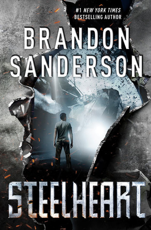
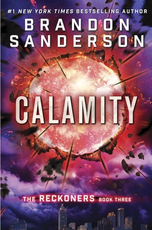
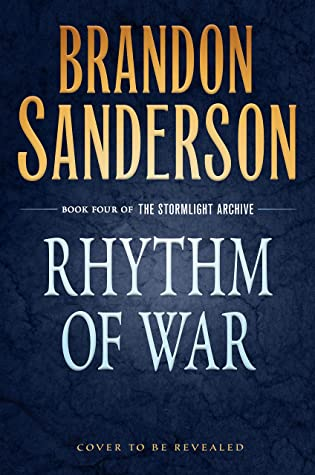

Brandon Sanderson


|
BiographyBrandon Sanderson (born December 19, 1975) is an American fantasy and science fiction writer. He is best known for the Cosmere universe, in which most of his fantasy novels (most notably the Mistborn series and The Stormlight Archive) are set. He is also known for finishing Robert Jordan's high fantasy series The Wheel of Time. He created Sanderson's Laws of Magic and popularized the terms hard magic and soft magic systems. In 2008 Sanderson started a podcast with author Dan Wells and cartoonist Howard Tayler called Writing Excuses, involving topics about creating genre writing and webcomics. |
Steelheart (The Reckoners, #1)

|
SynopsisTen years ago, Calamity came. It was a burst in the sky that gave ordinary men and women extraordinary powers. The awed public started calling them Epics. But Epics are no friend of man. With incredible gifts came the desire to rule. And to rule man you must crush his will. Nobody fights the Epics...nobody but the Reckoners. A shadowy group of ordinary humans, they spend their lives studying Epics, finding their weaknesses, and then assassinating them. And David wants in. He wants Steelheart — the Epic who is said to be invincible. The Epic who killed David's father. For years, like the Reckoners, David's been studying, and planning — and he has something they need. Not an object, but an experience. He's seen Steelheart bleed. And he wants revenge. |
Firefight (The Reckoners, #2)
|
SynopsisBabylon Restored, formerly Manhattan, may give David answers. Ruled by the mysterious High Epic, Regalia, David is sure Babylon Restored will lead him to what he needs to find. And while entering another city oppressed by a High Epic despot is a gamble, David's willing to risk it. Because killing Steelheart left a hole in David's heart. A hole where his thirst for vengeance once lived. Somehow, he filled that hole with another Epic—Firefight. And he's willing to go on a quest darker, and more dangerous even, than the fight against Steelheart to find her, and to get his answers. |
Calamity (The Reckoners, #3)
|
SynopsisWhen Calamity lit up the sky, the Epics were born. David’s fate has been tied to their villainy ever since that historic night. Steelheart killed his father. Firefight stole his heart. And now Regalia has turned his closest ally into a dangerous enemy. David knew Prof’s secret, and kept it even when the Reckoners’ leader struggled to control the effects of his Epic powers. But facing Obliteration in Babilar was too much. Prof has now embraced his Epic destiny. He’s disappeared into those murky shadows of menace Epics are infamous for the world over, and everyone knows there’s no turning back. . . . But everyone is wrong. Redemption is possible for Epics—Megan proved it. They’re not lost. Not completely. And David is just about crazy enough to face down the most powerful High Epic of all to get his friend back. Or die trying. |
The Way of Kings (The Stormlight Archive, #1)
|
SynopsisAccording to mythology mankind used to live in The Tranquiline Halls. Heaven. But then the Voidbringers assaulted and captured heaven, casting out God and men. Men took root on Roshar, the world of storms. And the Voidbringers followed... They came against man ten thousand times. To help them cope, the Almighty gave men powerful suits of armor and mystical weapons, known as Shardblades. Led by ten angelic Heralds and ten orders of knights known as Radiants, mankind finally won. Or so the legends say. Today, the only remnants of those supposed battles are the Shardblades, the possession of which makes a man nearly invincible on the battlefield. The entire world is at war with itself - and has been for centuries since the Radiants turned against mankind. Kings strive to win more Shardblades, each secretly wishing to be the one who will finally unite all of mankind under a single throne. On a world scoured down to the rock by terrifying hurricanes that blow through every few day a young spearman forced into the army of a Shardbearer, led to war against an enemy he doesn't understand and doesn't really want to fight. What happened deep in mankind's past? Why did the Radiants turn against mankind, and what happened to the magic they used to wield? |
Words of Radiance (The Stormlight Archive, #2)
|
SynopsisExpected by his enemies to die the miserable death of a military slave, Kaladin survived to be given command of the royal bodyguards, a controversial first for a low-status "darkeyes." Now he must protect the king and Dalinar from every common peril as well as the distinctly uncommon threat of the Assassin, all while secretly struggling to master remarkable new powers that are somehow linked to his honorspren, Syl. The Assassin, Szeth, is active again, murdering rulers all over the world of Roshar, using his baffling powers to thwart every bodyguard and elude all pursuers. Among his prime targets is Highprince Dalinar, widely considered the power behind the Alethi throne. His leading role in the war would seem reason enough, but the Assassin's master has much deeper motives. Brilliant but troubled Shallan strives along a parallel path. Despite being broken in ways she refuses to acknowledge, she bears a terrible burden: to somehow prevent the return of the legendary Voidbringers and the civilization-ending Desolation that will follow. The secrets she needs can be found at the Shattered Plains, but just arriving there proves more difficult than she could have imagined. Meanwhile, at the heart of the Shattered Plains, the Parshendi are making an epochal decision. Hard pressed by years of Alethi attacks, their numbers ever shrinking, they are convinced by their war leader, Eshonai, to risk everything on a desperate gamble with the very supernatural forces they once fled. The possible consequences for Parshendi and humans alike, indeed, for Roshar itself, are as dangerous as they are incalculable. |
Oathbringer (The Stormlight Archive, #3)
|
SynopsisIn Oathbringer, the third volume of the New York Times bestselling Stormlight Archive, humanity faces a new Desolation with the return of the Voidbringers, a foe with numbers as great as their thirst for vengeance. Dalinar Kholin's Alethi armies won a fleeting victory at a terrible cost: The enemy Parshendi summoned the violent Everstorm, which now sweeps the world with destruction, and in its passing awakens the once peaceful and subservient parshmen to the horror of their millennia-long enslavement by humans. While on a desperate flight to warn his family of the threat, Kaladin Stormblessed must come to grips with the fact that the newly kindled anger of the parshmen may be wholly justified. Nestled in the mountains high above the storms, in the tower city of Urithiru, Shallan Davar investigates the wonders of the ancient stronghold of the Knights Radiant and unearths dark secrets lurking in its depths. And Dalinar realizes that his holy mission to unite his homeland of Alethkar was too narrow in scope. Unless all the nations of Roshar can put aside Dalinar's blood-soaked past and stand together--and unless Dalinar himself can confront that past--even the restoration of the Knights Radiant will not prevent the end of civilization. |
Rhythm of War (The Stormlight Archive, #4)
|
SynopsisThe eagerly awaited sequel to the #1 New York Times bestselling Oathbringer, from an epic fantasy writer at the top of his game. After forming a coalition of human resistance against the enemy invasion, Dalinar Kholin and his Knights Radiant have spent a year fighting a protracted, brutal war. Neither side has gained an advantage. Now, as new technological discoveries begin to change the face of the war, the enemy prepares a bold and dangerous operation. The arms race that follows will challenge the very core of the Radiant ideals, and potentially reveal the secrets of the ancient tower that was once the heart of their strength. At the Publisher's request, this title is being sold without Digital Rights Management Software (DRM) applied |